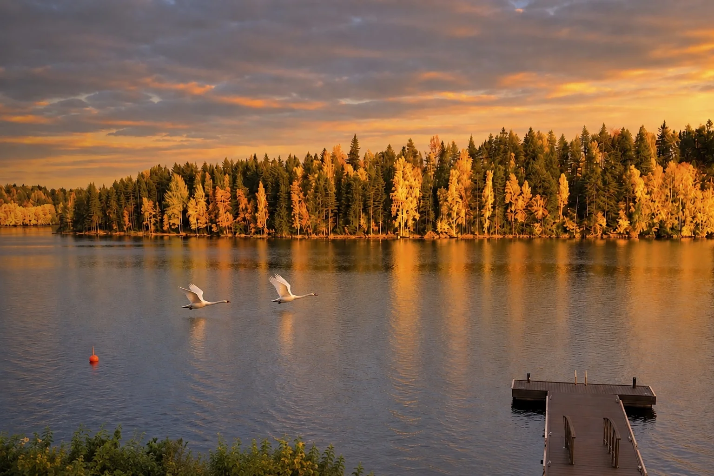

VTT
Partez directement de la villa
Le réseau de sentiers de Tahko est directement accessible à vélo depuis la villa.
Réseau de pistes de Tahko

La villa réunit deux choses rarement présentes au même endroit : un cadre privé au bord du lac et une station ouverte toute l’année à proximité. À Tahko, ski, golf, restaurants et services restent tout proches, sans enlever la sensation d’avoir son propre lieu au bord de l’eau.
Distances pratiques approximatives depuis Lakeside Villa & Spa. La piste de ski de fond entretenue et l’itinéraire officiel de motoneige se trouvent tous deux à environ 100 m de la villa.

Les pistes entretenues et l’offre hivernale de Tahko font du ski une partie naturelle d’un séjour à la villa.

Tahko Golf compte deux parcours : l’Old Course au bord du Syväri et Lake & Forest.
Le réseau de sentiers de Tahko est directement accessible à vélo depuis la villa.

En hiver, la piste de ski de fond entretenue se trouve à environ 100 mètres de la villa.

En hiver, l’itinéraire officiel de motoneige se trouve à environ 100 mètres de la villa.

Tahko compte une vingtaine de restaurants et d’adresses où manger répartis dans la station.
Les visiteurs internationaux découvrent souvent la Finlande d’abord par Helsinki ou la Laponie. Pour beaucoup de Finlandais, la région des lacs est une part tout aussi familière du pays — façonnée par l’eau, la forêt, le sauna et les longues soirées d’été. Le Syväri et Tahko réunissent cette vie traditionnelle au bord du lac avec les services et activités d’une station moderne ouverte toute l’année. La lumière qui dure et un paysage organisé autour de l’eau maintiennent une grande partie de la vie estivale dehors.

Par nuit claire et sombre, des aurores boréales peuvent parfois apparaître au-dessus de la villa. Cette photo a été prise depuis la propriété.
Tahko ne vit pas au même rythme toute l’année. VTT et golf laissent place au ski et à la motoneige, tandis que restaurants et services restent proches de la villa en toute saison. Le Syväri a lui aussi son propre calendrier : les cygnes reviennent lorsque la glace disparaît, élèvent leurs petits pendant l’été et repartent à la fin de l’automne.
L’aéroport de Kuopio, la gare de Siilinjärvi et la route vers Tahko offrent plusieurs façons simples d’arriver.